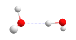
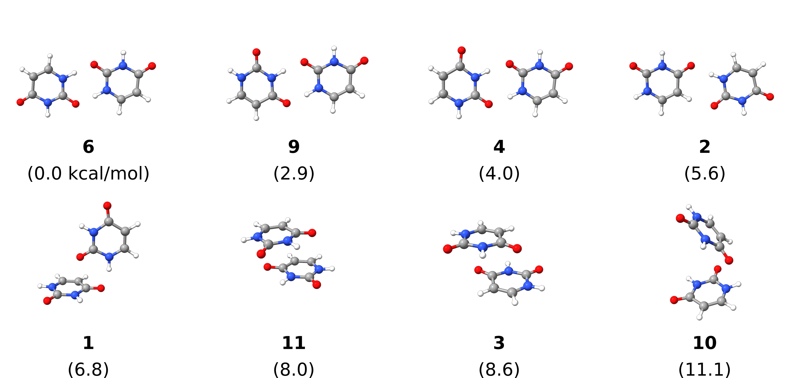
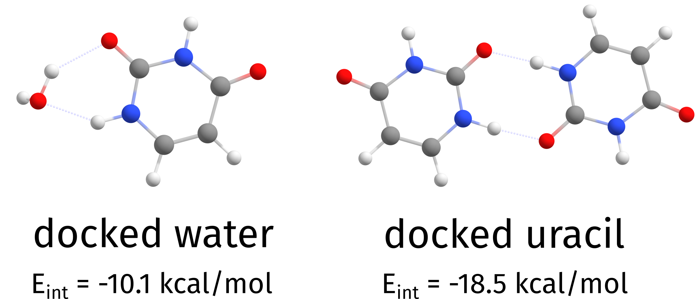

DOCKER: Automated Docking Algorithm¶
The most important aspects of chemistry/physics do not occur with single molecules, but when they interact with each other. Now, given any two molecules, how to put them together in the best interacting \"pose\"? That is what we try to answer when using the ORCA DOCKER. Docking here refers to the process of taking two systems and putting them together in their best possible interaction.
Note
The DOCKER on ORCA 6.1 was significantly improved, in both speed and accuracy, when compared to ORCA 6.0. These changes can also alter the results, but only because they will be even more accurate.
Example 1: A Simple Water Dimer¶
Let us start with a very simple example. Given two water molecules, how to find the optimal dimer? With the DOCKER that is simple and can be done with:
3 structure (0 1) O -2.13487 2.63905 -0.01809 H -1.16698 2.61938 0.02397 H -2.41372 2.24598 0.82256
!XTB %DOCKER GUEST "water.xyz" END * xyz 0 1 O -2.13487 2.63905 -0.01809 H -1.16698 2.61938 0.02397 H -2.41372 2.24598 0.82256 *
where the file water.xyz is a .xyz file which contains the same water structure, optionally with charge and multiplicity (in that order) on the comment line (the second line by default):
3 0 1 O -2.13487 2.63905 -0.01809 H -1.16698 2.61938 0.02397 H -2.41372 2.24598 0.82256
The molecule given on the regular ORCA input will be the HOST, and the GUEST is always given through an external file.
The output will start with:
***************
* ORCA Docker *
***************
Reading guests from file water.xyz
Number of structures read from file 1
Charge and multiplicity of guest from file
Docking approach independent
Docking level normal
Optimizing host .... -5.070544 Eh
Optimizing guest .... -5.070544 Eh
where it writes the name of the file with the GUEST structure, the number of structures read, some extra info and will optimize both host and guest (in this case they are the same), here by default using GFN2-XTB.
Note
If no multiplicity or charge are given, the GUEST is assumed to be neutral and closed-shell.
Note
The DOCKER right now is only working with the GFN-XTB and GFN-FF methods and the ALPB solvation model. It will be expanded later to others.
That is followed by some extra info that is explained in more details on its own detailed section (see structurereactivity.docker):
Starting Docker
---------------
Guest structure .... structure number 1
Guest charge and multiplicity .... (0 , 1)
Final charge and multiplicity .... (0 , 1)
PES used for swarm intelligence .... GFN2-XTB
Setting random seed .... done
Creating spatial grid
Grid Max Dimension 5.50 Angs
Angular Grid Step 32.73 degrees
Cartesian Grid Step 0.50 Angs
Points per Dimension 11 points
Initializing workers
Population Density 0.50 worker/Ang^2
Population Size 57
Swarm intelligence search
Minimization Algorithm mutant particle swarm
Min, Max Iterations (3 , 10)
That is followed by the docking itself, which will stop after a few iterations:
Iter Emin avDE stdDE Time
(Eh) (kcal/mol) (kcal/mol) (min)
-------------------------------------------------------
1 -10.147462 2.756033 1.821981 0.03
2 -10.147462 2.121389 1.610208 0.03
3 -10.148583 2.313606 1.365227 0.03
4 -10.148583 1.846998 1.188680 0.02
5 -10.148583 1.587332 1.168207 0.02
No new minimum found after 3 (MinIter) steps.
The idea here is to collect as many local minima as possible, that is, collect a first guess for all possible modes of interaction between the different structures. We do this by allowing both structures to partially optimize, but it is important to say we will not look for multiple conformers of the host and guest here.
With all solutions collected, we will take a fraction of them and do a final full optimization:
Running final optimization
Maximum number of structures 7
Minimum energy difference 0.10 kcal/mol
Maximum RMSD 0.25 Angs
Optimization strategy regular
Coordinate system redundant 2022
Fixed host false
Struc Eopt Interaction Energy Time
(Eh) (kcal/mol) (min)
------------------------------------------------
1 -10.149006 -4.968378 0.01
2 -10.149005 -4.967965 0.01
3 -10.149007 -4.968825 0.01
4 -10.149007 -4.968641 0.01
5 -10.149007 -4.968743 0.01
6 -10.149006 -4.968116 0.01
7 -10.149007 -4.968678 0.01
And as you can see, we also automatically print the Interaction Energy, which is simple an energy difference between the final complex, host and guest. The final best structure with lowest interaction energy is then saved on the Basename.docker.xyz file. If needed, all other structures are saved on the Basename.docker.struc1.all.optimized.xyz, as written on the output:
All optimized structures saved to : Basename.docker.struc1.all.optimized.xyz
-------------------------------------
LOWEST INTERACTION ENERGY: -4.968825 kcal/mol (structure 3)
-------------------------------------
(...)
The lowest energy structure was 1, with energy -10.149007.
Docked structures saved to Basename.docker.xyz
Note
The name Basename.docker.struc1.all.optimized.xyz refers to struc1 because that is the first docked guest. Later that can be done with multiple guest and that is only a way to organize the outputs.
We are all set, the output can be visualized and it is, as expected:

The final water dimer found using the GFN2-XTB PES.
Example 2: A Uracil Dimer¶
Now for a slightly more complex example, a uracil dimer:
12 structure (0 1) N -0.2707028 0.7632994 1.0276159 H -0.5957915 1.3097757 1.8163465 C -0.3386212 1.3810817 -0.2276640 O -0.7270425 2.5346295 -0.3329857 N 0.3638189 -1.2896563 0.1949192 H 0.0796815 0.9143946 -2.3190044 C 0.3781329 -0.7736192 -1.0714063 H 0.6499130 -1.4675080 -1.8526542 C 0.0669084 0.5154897 -1.3194961 H 0.4818502 -2.2779688 0.3498201 C -0.0016589 -0.5616540 1.3117092 O -0.0864879 -1.0482643 2.4227999
! XTB PAL16 %DOCKER GUEST "uracil.xyz" END *xyz 0 1 N -0.2707028 0.7632994 1.0276159 H -0.5957915 1.3097757 1.8163465 C -0.3386212 1.3810817 -0.2276640 O -0.7270425 2.5346295 -0.3329857 N 0.3638189 -1.2896563 0.1949192 H 0.0796815 0.9143946 -2.3190044 C 0.3781329 -0.7736192 -1.0714063 H 0.6499130 -1.4675080 -1.8526542 C 0.0669084 0.5154897 -1.3194961 H 0.4818502 -2.2779688 0.3498201 C -0.0016589 -0.5616540 1.3117092 O -0.0864879 -1.0482643 2.4227999 *
where the uracil.xyz is a simple repetition of the structure, as with the water before.
In this case the output is more diverse, and in fact many different poses appear as candidates for the final optimization:
Struc Eopt Interaction Energy Time
(Eh) (kcal/mol) (min)
------------------------------------------------
1 -49.248577 -11.723457 0.08
2 -49.250442 -12.893758 0.08
3 -49.245624 -9.870339 0.03
4 -49.252991 -14.493130 0.06
5 -49.248470 -11.656256 0.05
6 -49.259335 -18.474228 0.05
7 -49.259269 -18.432902 0.08
8 -49.254913 -15.699019 0.03
9 -49.254927 -15.708244 0.03
10 -49.241672 -7.390198 0.02
11 -49.246534 -10.441269 0.03
and structure number 6 is found to be the one with lowest interaction energy:
-------------------------------------
LOWEST INTERACTION ENERGY: -18.474228 kcal/mol (structure 6)
-------------------------------------
Here is a scheme with the structures found and their relative energies:

Uracil dimer structures generated by DOCKER (duplicates removed) with relative energies in kcal/mol.
Note
There might be duplicated results after the final optimization, these are currently not automatically removed. Here they were manually removed.
Warning
The PAL16 flag means XTB will run in parallel, but the ORCA DOCKER could be parallelized in a much more efficient way by paralleizing over the workers. That will be done for the next versions and it will be significantly more efficient.
Example 3: Adding Multiple Copies of a Guest¶
Suppose you want to add multiple copies of the same guest, for example three water molecules on top of the uracil one after the other. That can be simply done with:
12 structure (0 1) N -0.2707028 0.7632994 1.0276159 H -0.5957915 1.3097757 1.8163465 C -0.3386212 1.3810817 -0.2276640 O -0.7270425 2.5346295 -0.3329857 N 0.3638189 -1.2896563 0.1949192 H 0.0796815 0.9143946 -2.3190044 C 0.3781329 -0.7736192 -1.0714063 H 0.6499130 -1.4675080 -1.8526542 C 0.0669084 0.5154897 -1.3194961 H 0.4818502 -2.2779688 0.3498201 C -0.0016589 -0.5616540 1.3117092 O -0.0864879 -1.0482643 2.4227999
! XTB PAL16
%DOCKER
GUEST "water.xyz"
NREPEATGUEST 3
END
*xyz 0 1
N -0.2707028 0.7632994 1.0276159
H -0.5957915 1.3097757 1.8163465
C -0.3386212 1.3810817 -0.2276640
O -0.7270425 2.5346295 -0.3329857
N 0.3638189 -1.2896563 0.1949192
H 0.0796815 0.9143946 -2.3190044
C 0.3781329 -0.7736192 -1.0714063
H 0.6499130 -1.4675080 -1.8526542
C 0.0669084 0.5154897 -1.3194961
H 0.4818502 -2.2779688 0.3498201
C -0.0016589 -0.5616540 1.3117092
O -0.0864879 -1.0482643 2.4227999
*
and the guests on water.xyz will be added on top of the previous best complex three times. Now, there will be files with names Basename.docker.struc1.all.optimized.xyz, Basename.docker.struc2.all.optimized.xyz and Basename.docker.struc3.all.optimized.xyz, one for each step. Still, the same final Basename.docker.xyz file and now a Basename.docker.build.xyz is also printed, with the best result after each iteration.
That's how the results look like, from the Basename.docker.xyz:

Cumulative docking of three guests
Note
By default the HOST is always optimized. It can be changed with %DOCKER FIXHOST TRUE END
Example 4: Find the Best Guest¶
Another common case would be: given a list of guests - or conformers of the same guest (see structurereactivity.GOAT) - one might want to know what is the \"best guest\", that is the one with the lowest interaction energy.
In order to do that, simply pass a multixyz file and the DOCKER will try to dock all structures from that file, one by one:
12 structure (0 1) N -0.2707028 0.7632994 1.0276159 H -0.5957915 1.3097757 1.8163465 C -0.3386212 1.3810817 -0.2276640 O -0.7270425 2.5346295 -0.3329857 N 0.3638189 -1.2896563 0.1949192 H 0.0796815 0.9143946 -2.3190044 C 0.3781329 -0.7736192 -1.0714063 H 0.6499130 -1.4675080 -1.8526542 C 0.0669084 0.5154897 -1.3194961 H 0.4818502 -2.2779688 0.3498201 C -0.0016589 -0.5616540 1.3117092 O -0.0864879 -1.0482643 2.4227999
! XTB %DOCKER GUEST "uracil_water.xyz" END *xyz 0 1 N -0.2707028 0.7632994 1.0276159 H -0.5957915 1.3097757 1.8163465 C -0.3386212 1.3810817 -0.2276640 O -0.7270425 2.5346295 -0.3329857 N 0.3638189 -1.2896563 0.1949192 H 0.0796815 0.9143946 -2.3190044 C 0.3781329 -0.7736192 -1.0714063 H 0.6499130 -1.4675080 -1.8526542 C 0.0669084 0.5154897 -1.3194961 H 0.4818502 -2.2779688 0.3498201 C -0.0016589 -0.5616540 1.3117092 O -0.0864879 -1.0482643 2.4227999 *
Here the file uracil_water.xyz looks like:
15 0 1 O -2.13487 2.63905 -0.01809 H -1.16698 2.61938 0.02397 H -2.41372 2.24598 0.82256 N -0.2707028 0.7632994 1.0276159 H -0.5957915 1.3097757 1.8163465 C -0.3386212 1.3810817 -0.2276640 O -0.7270425 2.5346295 -0.3329857 N 0.3638189 -1.2896563 0.1949192 H 0.0796815 0.9143946 -2.3190044 C 0.3781329 -0.7736192 -1.0714063 H 0.6499130 -1.4675080 -1.8526542 C 0.0669084 0.5154897 -1.3194961 H 0.4818502 -2.2779688 0.3498201 C -0.0016589 -0.5616540 1.3117092 O -0.0864879 -1.0482643 2.4227999
with a water followed by an uracil molecule. First, the water will be added, then the uracil, but both separately. The initial output is a bit different:
***************
* ORCA Docker *
***************
Reading guests from file uracil_water.xyz
Number of structures read from file 2
Charge and multiplicity of guests from file
Docking approach independent
Docking level normal
with now two structures being read from file, and the Docking approach is labeled as independent, meaning each structure will be docked independently of each other.
After everything, the output is:
-------------------------------------
LOWEST INTERACTION ENERGY: -18.482854 kcal/mol (structure 6)
-------------------------------------
Total time for docking: 4.84 minutes
The lowest energy structure was 2, with energy -49.259349.
Docked structures saved to Basename.docker.xyz
and one can see that the lowest interaction energy was that of structure 2 (the uracil), meaning it interacts strongly with the HOST than the water molecule given. Now the file Basename.docker.xyz will contain all final structures, ordered by interaction energy.

Independent docking of water and uracil on top of an uracil molecule
Note
By default, the docking approach uses a fixed random seed and should always give the same result on the same machine. To make it always completely random add %DOCKER RANDOMSEED TRUE END
Note
In order to use the faster GFN-FF instead of GFN2-XTB, use !DOCK(GFNFF). For a quicker (and less accurate) docking, use !QUICKDOCK.
Note
To try multiple conformers of the GUEST, the ensemble file printed by GOAT Basename.finalensemble.xyz can be directly given here and the whole ensemble will be tested against a give HOST.
A detailed summary of the other options can be found on docker.keywords.
Underlying theory¶
The basic idea behind the DOCKER is to use a type of swarm intelligence shami_particle_2022 to find local minima for where the HOST would best be positioned, based on the energies and gradients of a given Potential Energy Surface (PES).
Swarm intelligence algorithms were invented trying to mimic the behavior of animals such as bees and ants, and it actually fits the problem here quite well (as shown below). The basic steps needed for the algorithm are:
- Optimize
HOSTandGUEST; - Create a spacial grid around the
HOST; - Initialize a possible set of random solutions;
- Let the swarm intelligence find local minima;
- Preoptimize with GFN-FF a large number of these minima;
- Collect a fraction of the best solutions found on 4. and fully optimize them;
- The structure with the lowest energy is considered the best solution.
To quickly demonstrate how the initial set of solutions \"evolve\" to find different local minima, take as an example the substituted biphenyl as HOST below. The figure below demonstrates how a water molecule (GUEST) is docked onto the initial HOST.
Each gray ball represents one possible placing of the water molecule (ignoring here its rotation angle). At the start, they are all distributed over the HOST without any bias. As the iterations go by, the algorithm starts to detect that both sides of the molecule have lower energy solutions than the aromatic rings, as expected, and the possible solutions start to converge to those points.
In the end, solutions containing water molecules binding to both sides are taken, the system is then fully optimized and one finds that the best biding occurs with the hydroxy group to the right.

The docking process of a water molecule on the substituted biphenyl.
Warning
Right now the DOCKER can only be used together with the fast GFN-XTB methods, it will be generalized later. It is also not fully exploring the parallelization potential yet, and can be much faster for the next versions.
Looking Deeper into the Output¶
The details related to the grid and the swarm optimization can be found on the output, here is one example taken from the water dimer example from the earlier section:
Creating spatial grid
Grid Max Dimension 5.50 Angs
Angular Grid Step 32.73 degrees
Cartesian Grid Step 0.50 Angs
Points per Dimension 11 points
Initializing workers
Population Density 0.50 worker/Ang^2
Population Size 57
Swarm intelligence search
Minimization Algorithm mutant particle swarm
Min, Max Iterations (3 , 10)
The Population Density here defines how many solutions will be placed on the initial grid around the HOST and can be controlled by %DOCKER SWARMPOPDENSITY 0.50 END, while the population size is a direct consequence of that, unless specified by SWARMPOPSIZE under %DOCKER.
Another important piece of information is the Min, Max Iterations, which define the minimum number of iterations before checking for convergence, and the maximum possible number of iterations. These can be changed by setting SWARMMINITER and SWARMMAXITER under the %DOCKER.
Then during the swarm search itself (here called the \"evolution step\"), the HOST and GUEST are partially optimized using the same criteria as from !SLOPPYOPT, and their energy at convergence is taken as a convergence criteria. The printing, still for the previous example, reads:
Note
All of the optimizations respect constraints and/or wall potentials given on the %GEOM block. The HOST can be easily frozen with %DOCKER FIXHOST TRUE END.
Iter Emin avDE stdDE Time
(Eh) (kcal/mol) (kcal/mol) (min)
-------------------------------------------------------
1 -10.147462 2.756033 1.821981 0.03
2 -10.147462 2.121389 1.610208 0.03
3 -10.148583 2.313606 1.365227 0.03
4 -10.148583 1.846998 1.188680 0.02
5 -10.148583 1.587332 1.168207 0.02
No new minimum found after 3 (SwarmMinIter) steps.
Here we have the number of iterations, the energy of the best solution found during the process, the average energy difference from the lowest solutions and its standard deviation. The first number shows if the system is evolving towards a lower energy solutions and the later two give an idea of the \"spread\" of the energies found.
If no new minimum is found over SWARMMINITER iterations, the algorithm is considered to be converged and the best solutions are taken to the final optimization step.
The final steps¶
After the evolution step, a total of \(max(sqrt(SwarmPopSize),5)\) structures are taken from the set of solutions for a final full optimization. The output looks like:
Running final optimization
Maximum number of structures 7
Minimum energy difference 0.10 kcal/mol
Maximum RMSD 0.25 Angs
Optimization strategy regular
Coordinate system redundant 2022
Fixed host false
Minimum energy difference and Maximum RMSD (obtained after an optimal rotation using the quaternion approach) are taken. The coordinate system is also be automatically set to Cartesian if there are more than 300 atoms in total. Set AUTOCOORDSYS FALSE to avoid that or %GEOM COORDSYS CARTESIAN END to use Cartesian coordinates all the way during the docking process.
If some optimizations fail during the process, they will be flagged as optimization failed, as in the example below:
Struc Eopt Interaction Energy Time
(Eh) (kcal/mol) (min)
------------------------------------------------
1 -10.149006 -4.968378 0.01
2 -10.149005 -4.967965 0.01
3 optimization failed 0.01
4 -10.149007 -4.968641 0.01
(...)
That only means some of the solutions failed to fully optimize at the end, and on the printed file their energy is set to 1000 Eh to show the job was not completed. If you want to increase the number of iterations, or change the final convergence criteria, just change them using the %GEOM block as usual.
Adding a bond bias to the docking process¶
The bond biases available for geometry optimization (see Section optimization.bondbias) can also be applied to the DOCKER, but the input here is slightly different.
As the DOCKER does not know the total number of atoms from the start, the %DOCKER block needs the first atom numbers from GUEST and HOST in that order and not the number of atoms from the final complex.
For example, to add a bond bias between atom 2 from the GUEST and atom 19 from the HOST during the docking process, please use:
The same parameters and their defaults from the %GEOM block are used here.
Note
This will also be applied to the SOLVATOR if the CLUSTERMODE DOCKING (default) is used. The GUEST atom number corresponds to that of the solvent, as printed in the output.
Warning
If biases are added from the %DOCKER block, they will override any other bias from the %GEOM block.
Defining the center and extent of the grid¶
As explained above, the placement of GUEST molecules is done with the help of a spatial grid. By default, the grid is built around the centroid of the host molecule. However, in cases a different position for the grid is wanted, it can be changed by setting an arbitrary center and extents.
Its center can be defined in terms of Cartesian coordinates simple via:
or a list of atoms can also be given, and the centroid of those atoms will be taken. If a single atom is given, that will of course be the center:
Warning
If GRIDCENTERATOMS were given and the HOST is optimized, which is the default case, the grid center will be defined only after the geometry is optimized. For the GRIDCENTER option, the center will be fixed at the desired Cartesian coordinates.
The extent of the grid around that center can be controlled by:
and all x, y and z coordinates will expand that much from the center. It has to be a cube, and all dimensions will be the same. If an extent is not given, the default values will be used.
Note
There is no problem setting the grid extent to regions where atoms are present. The grid will be only built around these, same as for the default case.
General Tips¶
- In order to quick change the PES of the docking process, you can use
!DOCK(GFN2-XTB),!DOCK(GFN1-XTB),!DOCK(GFN0-XTB)or!DOCK(GFN-FF). - For a quicker and less accurate docking the input
!QUICKDOCKis also available. - There are four levels of \"docking\" procedure, from simple to more elaborate:
SCREENING,QUICK,NORMAL(default) andCOMPLETE, which can be given as%DOCK DOCKLEVEL COMPLETE END. - To increase the final number of structures optimized in the end, just change
NOPTunder%DOCKER. - If the guest topology is somehow changed during the docking process, that structure will be discarded. This can be turned off by setting
%DOCK CHECKGUESTTOPO FALSE END.
Warning
By the time of the ORCA6.1 release, this algorithm was still not published. Publications are under preparation.
Keywords¶
A collection of GOAT related simple input keywords is given in tab:structurereactivity.docker.keywords.simple. All
%docker block options are summarized in tab:structurereactivity.docker.keywords.block.
Simple input keywords for the DOCKER algorithm.
| Keyword | Description |
|---|---|
QUICKDOCK |
Set DOCKLEVEL QUICK |
NORMALDOCK |
Set DOCKLEVEL NORMAL |
COMPLETEDOCK |
Set DOCKLEVEL COMPLETE |
DOCK(GFN-FF) |
Set EVPES GFNFF |
DOCK(GFN0-XTB) |
Set EVPES GFN0XTB |
DOCK(GFN1-XTB) |
Set EVPES GFN1XTB |
DOCK(GFN2-XTB) |
Set EVPES GFN2XTB |
%docker block input keywords for the DOCKER algorithm.
| Keyword | Options | Description |
|---|---|---|
GUEST |
"filename.xyz" |
An .xyz file (can be multistructure), from where the guest(s) will be read. Can contain different charges and multiplicities for each guest on the comment line. Will only be read if exactly two integer numbers are given, otherwise ignored. |
DOCKLEVEL |
screening |
Defines a general strategy for docking. |
quick |
Will alter things like the population density and final number of optimized structures. Default is normal. |
|
normal |
||
complete |
||
PRINTLEVEL |
low |
|
normal |
Default | |
high |
Will print many extra files! | |
NREPEATGUEST |
1 |
Number of times to repeat the content of the "GUEST" file |
CUMULATIVE |
true |
Add the contents of the "GUEST" file one on top of each other? Default is false, meaning each will be done independently. |
GUESTCHARGE |
0 |
Can be used to define a charge for the guest (default 0) |
GUESTMULT |
3 |
Same for multiplicity (default 1). Both can also be given via the comment line of "filename.xyz", see above. |
RAMDOMSEED |
true |
Whether to allow for the process to be truly random and will give different results every time (default false) |
FIXHOST |
true |
Freeze coordinates for the HOST during all steps? (default false) |
OPTLEVEL |
sloppyopt |
Use default optimization criteria inside the DOCKER |
looseopt |
||
normalopt |
||
AUTOCOORDSYS |
false |
Automatically use Cartesian coordinates for the docking process (default false) |
ALLOWMETALCOORD |
true |
Will allow the DOCKER to place atoms close enough to metals to create coordination bonds. By default this is false and such bonds will only occur through optimization, which can be done inside the DOCKER, but not necessarily. |
MBONDFAC |
1.0 |
A multiplying factor for the radii when defining a bond with metals. Default is 1.0 |
| Grid options: | ||
GRIDCENTER |
1.00, 0.642, -1.234 |
Cartesian coordinates for the center in Angström |
GRIDCENTERATOMS |
{0:5 7} end |
A list of atoms from which the centroid will be taken |
GRIDEXTENT |
15 |
The extent, from the center, in one dimension in Angström |
| Swarm intelligence step: | ||
POPDENSITY |
5.0 |
Population density per Angström squared. Default depends on the Docking level |
POPSIZE |
500 |
A fixed number for the population size |
SWARMMAXITER |
10 |
Maximum number of iterations |
SWARMMINITER |
3 |
Minimum number to check for convergence and minimum required of equal steps to signal convergence |
SWARMPOPDENSITY |
0.5 |
The population density based on the HOST grid |
SWARMPOPSIZE |
150 |
A fixed number for the swarm population size |
SWARMPES |
cdp |
Which PES to use only during the evolution step. The default cdp is a lot faster than the others. |
gfnff |
Can be different from the final optimization. | |
gfn0xtb |
||
gfn1xtb |
||
gfn2xtb |
||
CHECKTOPO |
false |
Check the topology of both host and guest during the docking process? Default is true. |
| Pre optimizations: | ||
PREOPT |
false |
Controls whether the PreOpt step will be done. Default true. |
| Final optimizations: | ||
NOPT |
10 |
A fixed number of structures to be optimized |
NOOPT |
false |
Do not optimize any structure at all? (default false) |